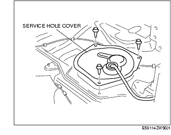
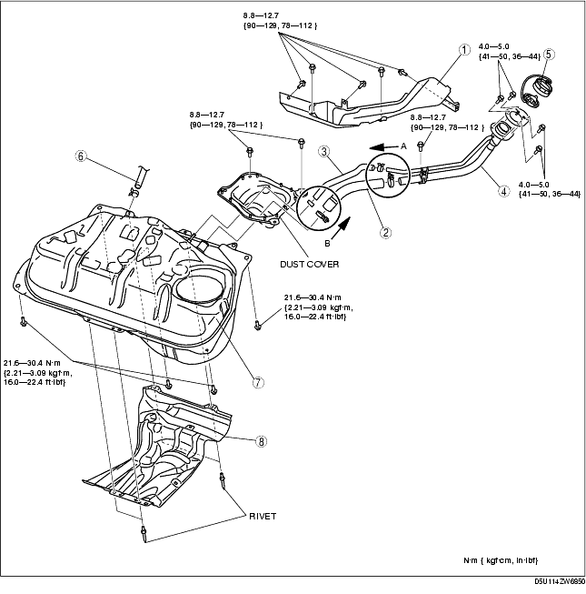
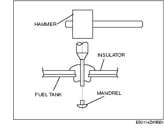
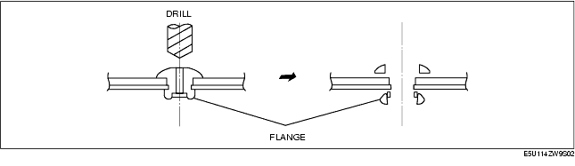
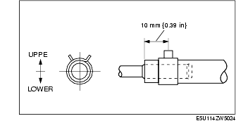
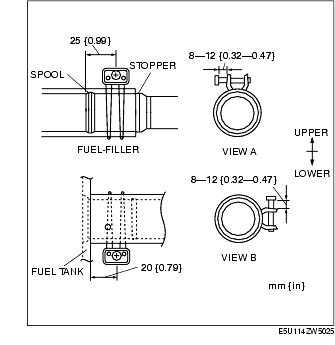

Workshop Manual ➭ ENGINE ➭ FUEL SYSTEM[L8, LF] ➭ FUEL TANK REMOVAL/INSTALLATION [L8, LF]
FUEL TANK REMOVAL/INSTALLATION [L8, LF]
id0114a3801600
{: #wp1059781}
Warning
• Fuel is very flammable liquid. If fuel spills or leaks from the pressurized fuel system, it will cause serious injury or death and facility breakage. Fuel can also irritate skin and eyes. To prevent this, always complete the "Fuel Line Safety Procedure", while referring to "BEFORE SERVICE PRECAUTION". {: #wp1063513}• Fuel is very flammable liquid. If fuel spills or leaks from the pressurized fuel system, it will cause serious injury or death and facility breakage. Fuel can also irritate skin and eyes. To prevent this, before performing the fuel pump unit removal/installation, always complete the "Fuel Leak Inspection After Fuel Pump Unit Installation". {: #wp1059807}• A person charged with static electricity could cause a fire or explosion, resulting in death or serious injury. Before draining fuel, make sure to discharge static electricity by touching the vehicle body.
-
Park the vehicle on a level surface.
-
Follow "BEFORE SERVICE PRECAUTION" before performing any work operations to prevent fuel from spilling from the fuel system. (See BEFORE SERVICE PRECAUTION [L8, LF].)
-
Remove the battery cover.
-
Disconnect the negative battery cable. (See BATTERY REMOVAL/INSTALLATION [L8, LF].)
-
Remove the following parts.
(1) Middle pipe (See EXHAUST SYSTEM REMOVAL/INSTALLATION [L8, LF].) {: #wp1059903}(2) Propeller shaft (See PROPELLER SHAFT REMOVAL/INSTALLATION.) {: #wp1059921}(3) Power plant frame (See Power Plant Frame Removal Note.) (See Power Plant Frame Removal Note.) (See Power Plant Frame Removal Note.) {: #wp1059967}(4) Rear drive shaft (See REAR DRIVE SHAFT REMOVAL/INSTALLATION) {: #wp1059975}(5) Rear differential (See REAR DIFFERENTIAL REMOVAL/INSTALLATION.) {: #wp1059993}(6) Rear crossmember component (See REAR CROSSMEMBER REMOVAL/INSTALLATION.)
- Perform the following procedure to remove the service hole cover.
(1) To remove the back trim, remove the following parts:
1) Console (See CONSOLE REMOVAL/INSTALLATION.) {: #wp1060049}2) Quarter trim (See QUARTER TRIM REMOVAL/INSTALLATION.) {: #wp1060067}3) Scuff plate (See SCUFF PLATE REMOVAL/INSTALLATION.) {: #wp1060085}4) Tire house trim (See TIRE HOUSE TRIM REMOVAL/INSTALLATION.) {: #wp1060103}5) Aeroboard (See AEROBOARD REMOVAL/INSTALLATION.) {: #wp1060121}6) Front seat bar garnish (See SEAT BACK BAR GARNISH REMOVAL/INSTALLATION.)
(2) Remove the back trim. (See BACK TRIM REMOVAL/INSTALLATION.)
{: #wp1060157}(3) Remove the service hole cover.

-
Disconnect the quick release connector using the SST from the fuel pump unit. (See QUICK RELEASE CONNECTOR (FUEL SYSTEM) REMOVAL/INSTALLATION [L8, LF].)
-
Remove the fuel pump unit. (See FUEL PUMP UNIT REMOVAL/INSTALLATION [L8, LF].)
-
Siphon the fuel from the fuel tank.
-
Remove in the order indicated in the table.
-
Install in the reverse order of removal.
-
Complete the "AFTER SERVICE PRECAUTION". (See AFTER SERVICE PRECAUTION [L8, LF].){: #wp1060278}

|
Protector {: #wp1060331} (See Protector Removal Note.) {: #wp1060395} |
|
|---|---|
|
2 {: #wp1060369} |
Joint hose {: #wp1060372} (See Joint Hose Installation Note.) {: #wp1060419} |
|
3 {: #wp1060376} |
Breather hose {: #wp1060379} (See Breather Hose Installation Note.) {: #wp1060443} |
|
4 {: #wp1060455} |
Fuel-filler pipe {: #wp1060458} |
|
5 {: #wp1060479} |
Fuel-filler cap {: #wp1060482} |
|
6 {: #wp1060503} |
Evaporative hose {: #wp1060506} |
|
7 {: #wp1060526} |
Fuel tank {: #wp1060529} (See Fuel Tank Removal Note.) {: #wp1060551} |
|
8 {: #wp1060563} |
Insulator {: #wp1060566} (See Insulator Removal Note.) {: #wp1060590} |
Protector Removal Note
- Remove the trunk side trim. (See TRUNK SIDE TRIM REMOVAL/INSTALLATION.)
Fuel Tank Removal Note
-
Move the dust cover slightly out of the way.
-
Move the charcoal canister slightly out of the way. (See CHARCOAL CANISTER REMOVAL/INSTALLATION [L8, LF].)
Insulator Removal Note
Caution
• Be careful not to damage the fuel tank when removing the rivet. If the fuel tank is damaged, it may cause fuel leakage.
*Note*{: #wp1060718}
• The insulator is installed using rivets. {: #wp1063516}• When reinstalling the rivet, install the same rivet or M5 bolt and nut.
- Push out the mandrel using a hammer and punch (2-2.8 mm {0.08-0.11 in} diameter).{: #wp1060746}

- Remove the flange using a drill (5 mm {0.20 in} drill bit).{: #wp1060799}

Breather Hose Installation Note
- Install the breather hose and clamp as shown in the figure.{: #wp1060848}

Joint Hose Installation Note
- Install the joint hose and clamp as shown in the figure.{: #wp1060885}

- Install the clamp between the spool and stopper without overlapping the stopper.